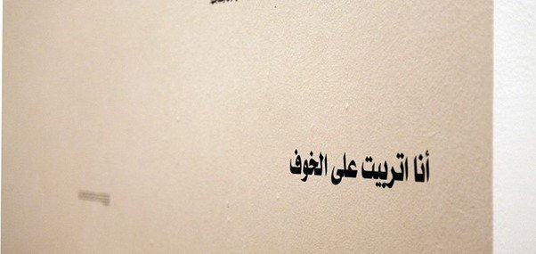
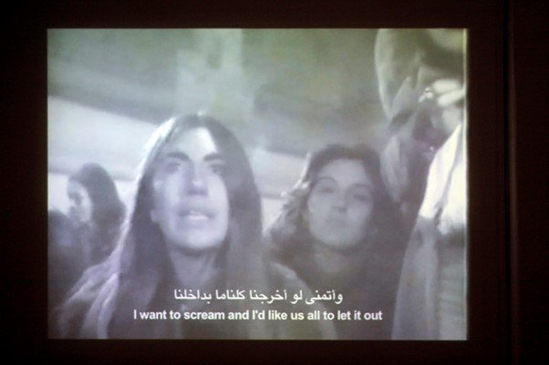
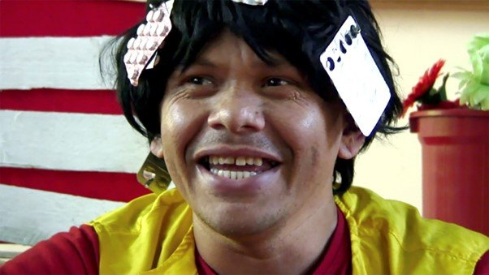
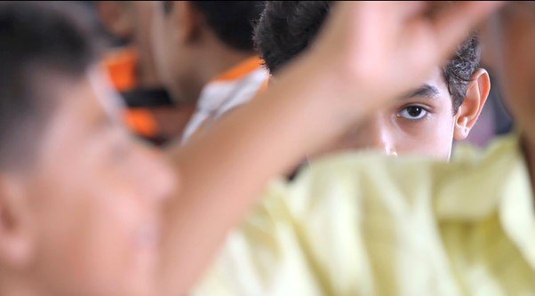
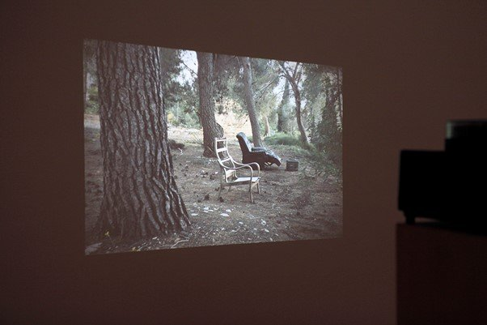

Originally published in Mada Masr on 15 May 2016
By Ismail Fayed

خوارج العباسية (Abbasseya Outsiders) installation at Contemporary Image Collective
Chronic: On Psychological Exhaustion as a Public State, which shows at the Contemporary Image Collective until June 4, tackles a difficult question: How do you organize an exhibition in a context of extreme political repression, without it being a "political statement" per se, and while recognizing the profound emotional and psychological dimension central to such a context?
This dimension takes both individual and collective manifestations, yet remains unaddressed outside the realm of documentation or individual acknowledgement. In addressing it, this second exhibition in CIC's ongoing If Not for that Wall project probes several problematics in our understanding of contemporary art and emotion both globally and locally.
Globally, contemporary art seems to me largely mutually exclusive from the psychology of emotion, while in turn psychology's meaningfulness seems to oppose the medicalization of our understanding of emotions. At the same time, art's fixation on "critical" conceptual frameworks has placed a strong emphasis on its intellectual side (work is often described with words like "analytical," "critical," "investigating" and "interrogating"), perhaps to give art practices added validation or seriousness. This may be a legacy from when early modernism's idealism and a deep suspicion of it after two world wars synthesized, ascribing hegemony to critical thinking over art's formalism or psychology, as manifest in a distrust of emotion and subjective, psychic thinking.
In addition, the use of technologies to map, describe and predict human behavior according to science (a triumph of neuroscience over psychology) has relegating psychology and its twin historical method, psychoanalysis, to scientific oblivion. This has contributed to a disregard for the importance of psychology and psychoanalysis in shaping modern art since the early 20th century (these trends may be changing, however).
Either way, in a moment when political repression and authoritarianism create a very specific psychological state, it is only sensible to look at terms such as "anxiety," "exhaustion" and "depression" in a way that acknowledges their significance and is able to say something meaningful about them.
Locally, psychoanalysis played a crucial role in the development of modern art, starting from the intellectual engagement of the Art and Liberty group in the early 1940s (exemplified in the writing of Ramsis Younan and Georges Henein) all the way to Esmat Dawestashy's more recent surreal, psychological painting and sculptures. Outside of art, psychologist Yusuf Murad was teaching psychology in Arabic at Cairo University as early 1940. The discipline and its method has had a long intellectual presence, but there is a lack of clinical presence and progressive methodology in dealing with individual and collective subjective difference, and psychiatry in Egypt could not be more politicized. Only last week, Ahmed Okasha, president of the Egyptian Psychiatric Association, said on television that Egyptians have not formulated a sense of democracy, and that giving democracy and freedom to the ignorant is akin to giving weapons to the mad.
In this double bind of global and local tensions around the politicized and precarious position of psychology, Chronic is a much-needed attempt tackle it head-on while being both politically engaged and mindful of what constitutes an interesting artistic process. Three artworks explore how radical and progressive psychiatric movements have taken on institutionalized forms of psychiatric care, while two deal with specific psychological states and how film as a medium can answer to them.
The works of Alberto Grifi, Dora Garcia and the Abbasseya Outsiders fall in the first vein. Grifi's 27-minute video Il manicomio—Lia (The Asylum – Lia, 1977) is a brilliantly shot documentation of a counter-congress held in Italy to the official Congrès International De Psychanalyse. Grifi's one-take, close-up, center shot of three overlapping monologues is a masterpiece of dramatizing documentation. We know none of this is scripted, and the black-and-white hazy quality of video and the impassioned rhetoric of Lia and her interlocutors don't give a sense of the theatrical or staged, yet it is so flawlessly timed and edited that it's hard to believe it's just documentation. Lia's scathing critique of the institutionalized system of mental healthcare reflects the power structures that define what illness is and how we can deal with it.

Alberto Grifi, Il manicomio—Lia (The Asylum – Lia), 1977

Dora Garcia, The Deviant Majority: From Basaglia to Brazil, 2010
Dora Garcia's The Deviant Majority: From Basaglia to Brazil (2010) is a 34-minute video exploring the impact of the work of Italian psychiatrist and radical leftist Franco Basaglia (1924-1980) on psychiatric practices in Italy and elsewhere. Basaglia, who was responsible for passing a key reform in mental healthcare in Italy in 1978, was an advocate for removing the stigma of mental illness and dismantling psychiatric asylums. Garcia's film traces out three contexts in which Basaglia's ideas have impacted psychiatric practice, and the limits of his radical vision on contemporary psychiatric practice after a neoliberal economy has practically ended the notion of universal healthcare.
There are three segments: an interview with members of a theater company at the Psychiatric Hospital of Trieste in Italy, one with a similar group in Rio de Janeiro in Brazil, and an encounter with activist Carmen Roll, a former member of the radical German Sozialistisches Patientenkollektiv (Socialist Patients' Collective), which regarded most mental illness as either a direct byproduct of capitalism or as a psychological difference pathologized by capitalism in an attempt to control it. The segments are edited in a such a way as to create a particular rhythm to the speech and "performance" of those speaking. Garcia captures the uniqueness of her characters through the way they speak, their gaze or their mere presence, making the work exciting yet uncomfortable to watch. It is immediately revealing of the possibilities of drama and its inextricable connection to "madness." The effect is both interesting and unsettling. The patients look happy and well-adjusted, yet their idiosyncrasies and peculiarities leave us wondering how far we can take Basaglia's idealistic vision of a madness-free world.
The installation All This Makes Me Feel Humiliated (2016) by the Abbasseya Outsiders reflects on the local context for understanding mental and emotional distress. The Abbasseya Outsiders is a collective that works with talking about negative emotions as a way to reveal their problematic relationships to a broader social, moral and cultural context. This context controls what kind of emotion and displays of emotion are acceptable with reference to a conservative, patriarchal and sexist system. The installation features printed quotations on paper narrating situations where they experienced negative emotions or were confronted by an unforgiving society because of their display of negativity or psychological fragility. The quotations could have had an exciting potential, were they not articulated in an almost naive, confessional writing style. I felt the participants should have been given a better chance to express their emotional realities instead of just relaying them, rather simplistically, via a written form.
Two works explore how film itself can deal with madness, deviance and trauma in different institutional and political contexts: the 15-minute Compos Mentis (2016) by Mohammad Shawky Hassan and Uriel Orlow's installation Unmade Film (2012-2014).
Shawky's filmic essay combines shifting scenes from settings where "faith" and "madness" collide or conflate, along with voiceover excerpts from famous Arab films and literary texts dealing with madness. It highlights the tensions and liminal points where either socially sanctioned behavior is considered "mad" or "absurd," or where "madness" and "absurdity" become embedded in religiously and socially sanctioned rituals and performances — ranging from baptisms to circus performances and parades. In one scene, infants are baptised while looking clearly distressed, surrounded by family staring at them with a mixture of feigned joy and psychological ambivalence. In another sequence, people are dressed up and dancing to thumping music in the carnivalesque atmosphere of a New York parade. The public performance of excess also brings to mind the limits of what is socially acceptable under what context. Throughout, the voiceover and old film excerpts border on the cynical, creating an undertone of dark comedy to the whole work — again reminding us how precarious ideas of "sane" and "normal" are.

Mohammad Shawky Hassan, Compos Mentis, 2016

Uriel Orlow, Unmade Film, 2012-2014
Orlow's Unmade Film is made up of textual, visual and auditory elements that together hint at an imagined proposal for a film. It stops short of actually being one, because it faces the limits of the medium to deal with something as profound as trauma. The project looks at the legacy of the 1948 massacre by Zionists of Palestinians in Deir Yassin, a village near Jerusalem, and the transformation of the massacre's physical space into the mental hospital of Kafr Shaaul, which treats victims of the Holocaust. This deeply ironic fact sums up the failures and agonies of the Zionist project. The suppressing of one massacre to treat victims of another massacre reveals how easily a victim can become a perpetrator, creating other victims.
The installation shows fragments from psychiatric evaluations of hospital residents printed on A4 paper, together with unpeopled slides of the hospital projected on the wall opposite. This creates a haunting textual-visual landscape that can only be filled by our imagination, suggesting that an absence and silence — which demands we think and imagine — is the only way to transcend the limits of a medium. There is also the Storyboard, a booklet of drawings by orphans from an orphanage and school established by the rescuer of 55 orphans from Deir Yassin, Hind al-Husseini. In a workshop with Orlow, several children made drawings narrating the history of the place to make a film about it. This is the least subtle aspect: While utilizing the ways children imagine trauma and death, it lacks that poignant use of absence. Finally, in an adjacent room an audio installation gives us a tour of the mental hospital and Deir Yassin, conflating them and again inviting us to imagine how they co-exist — or rather, can't.
Most of the works were quite immersive and they seemed to echo each other. In a way, the works worked in tandem or as mirror images of each other (Grifi's work mirrored by Gracia's video, and Shawky's was mirrored by Orlow's and that of the Abbasseya Outsiders). The fact that the videos were long also forced a particular arrangement of the space where you could just sit on a few cushions or a bench and lose yourself in them.
There were clear links to the other exhibition in CIC's If It Not for That Wall project, Greetings to Those Who Asked About Me (2015). Javier Tellez's film O Rinoceronte de Durer (2010) sets reenactments of contemporary patients in the Miguel Bombarda Psychiatric Hospital's panopticon, while Orlow's Unmade Film has affinities to Emma Wolukau-Wanambwa's Nice Time (2014), in which the archive is used to ask questions about the hegemonic narrative of the colonizer.
Chronic might have answered two crucial questions for contemporary art in a context like Egypt: how to show contemporary art that is relevant, and how to situate it in a larger global context without disregarding its own specificities. Its themes immediately render its artworks and the ideas behind them relatable and meaningful. For me, it also raises crucial questions about how psychology is essential to our understanding of art and how, in spite of the hegemony of specific intellectual trends, it continues to mediate artistic processes, no matter how "critical" or "scientific."